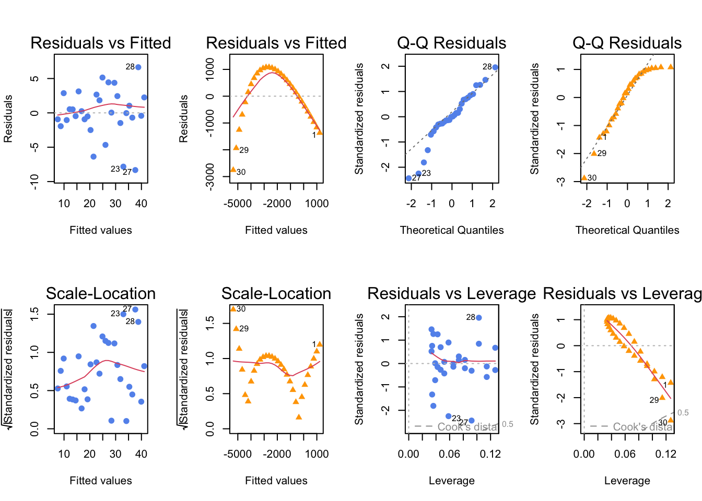

x_ex <-seq(from =5, to =9, length =30)y_ex <-exp(x_ex)df_ex <-cbind(x = x_ex,y =exp(x_ex)) %>%as_tibble()lm_ex <-lm(y ~ x, data = df_ex)lm_ex
Call:
lm(formula = y ~ x, data = df_ex)
Coefficients:
(Intercept) x
-9431 1642
model summary
Code
summary(lm_ex)
Call:
lm(formula = y ~ x, data = df_ex)
Residuals:
Min 1Q Median 3Q Max
-1081.0 -843.2 -226.3 660.5 2756.1
Coefficients:
Estimate Std. Error t value Pr(>|t|)
(Intercept) -9431.3 1111.3 -8.486 3.16e-09 ***
x 1642.0 156.5 10.492 3.30e-11 ***
---
Signif. codes: 0 '***' 0.001 '**' 0.01 '*' 0.05 '.' 0.1 ' ' 1
Residual standard error: 1023 on 28 degrees of freedom
Multiple R-squared: 0.7972, Adjusted R-squared: 0.79
F-statistic: 110.1 on 1 and 28 DF, p-value: 3.298e-11
model plots
Code
lm_pred <-ggpredict(lm_ex, terms =~x)ex_plot_noline <-ggplot(df_ex, aes(x= x, y = y)) +geom_point(shape =17, size =3, color ="orange") +theme_classic() +theme(text =element_text(size =14))ex_plot <-ggplot(df_ex, aes(x= x, y = y)) +geom_point(shape =17, size =3, color ="orange") +geom_line(data = lm_pred, aes(x = x, y = predicted), linewidth =1) +theme_classic() +theme(text =element_text(size =14))
diagnostic plots
Code
par(mfrow =c(2, 4))plot(model1, which =c(1), col ="cornflowerblue", pch =19)plot(lm_ex, which =c(1), col ="orange", pch =17)plot(model1, which =c(2), col ="cornflowerblue", pch =19)plot(lm_ex, which =c(2), col ="orange", pch =17)plot(model1, which =c(3), col ="cornflowerblue", pch =19)plot(lm_ex, which =c(3), col ="orange", pch =17)plot(model1, which =c(5), col ="cornflowerblue", pch =19)plot(lm_ex, which =c(5), col ="orange", pch =17)

Code
dev.off()
null device
1
comparison plots
Code
model1_plot_noline + ex_plot_noline
Code
model1_plot + ex_plot
correlation?
Code
x <- x_lmy <- y_lm
Code
cor.test(x, y, method ="pearson")
Pearson's product-moment correlation
data: x and y
t = 15.293, df = 28, p-value = 4.021e-15
alternative hypothesis: true correlation is not equal to 0
95 percent confidence interval:
0.8866210 0.9737646
sample estimates:
cor
0.9450274